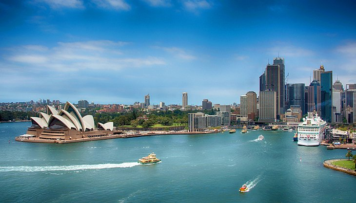
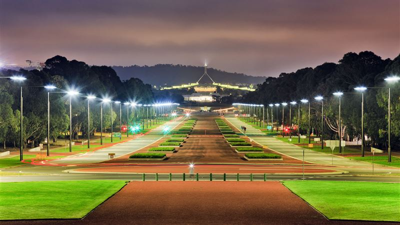
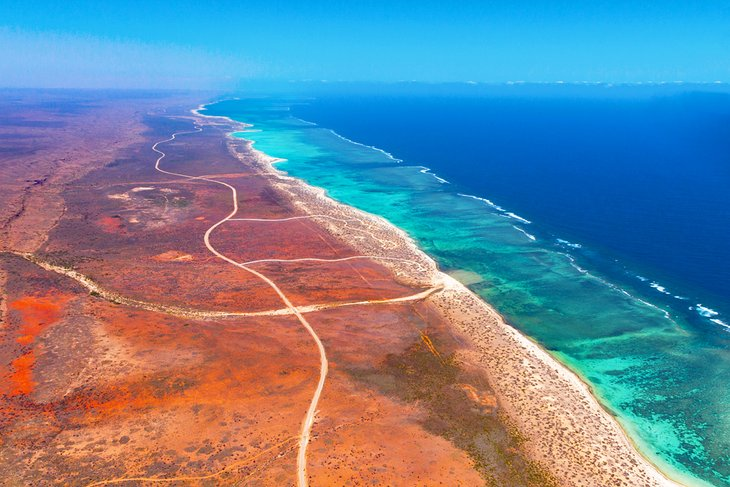
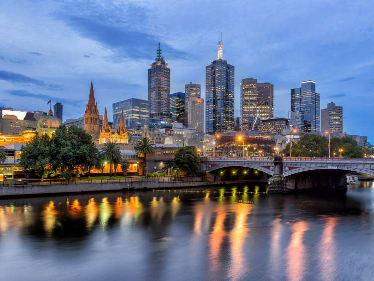
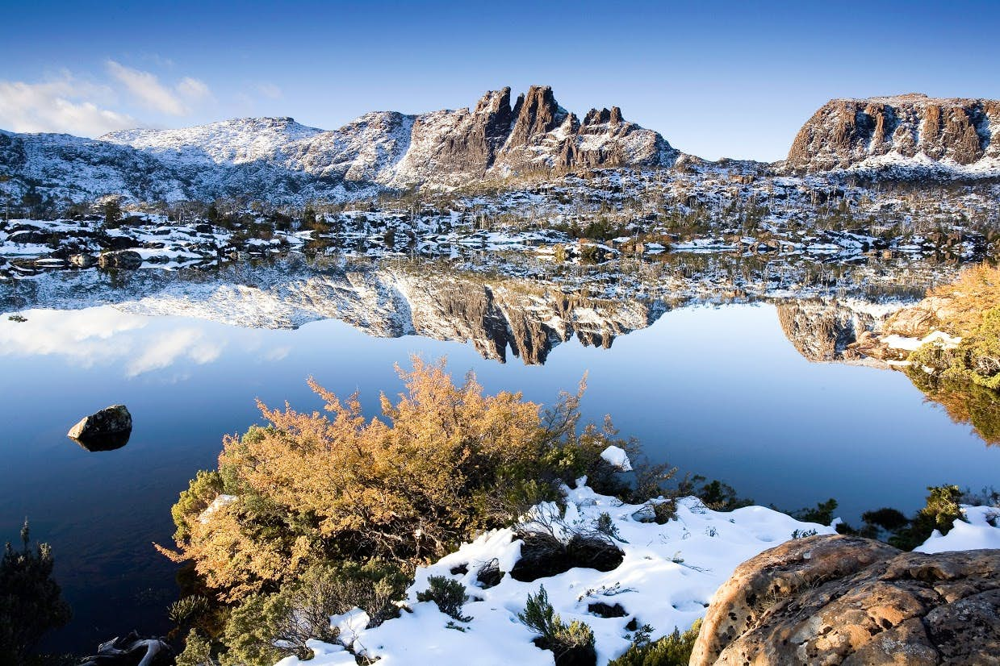

AUSTRALIAN LANDSCAPES

(Google images "australian flag")
AUSTRALIA HAD A DIFFERENT TYPE OF BEAUTIFUL LANDSCAPES THROUGHT OUT THE COUNTRY
Background Information about australia

"Australia, the smallest continent and one of the largest countries on Earth, lying between the Pacific and Indian oceans in the Southern Hemisphere. Australia’s capital is Canberra, located in the southeast between the larger and more important economic and cultural centres of Sydney and Melbourne.The Australian mainland extends from west to east for nearly 2,500 miles (4,000 km) and from Cape York Peninsula in the northeast to Wilsons Promontory in the southeast for nearly 2,000 miles (3,200 km). To the south, Australian jurisdiction extends a further 310 miles (500 km) to the southern extremity of the island of Tasmania, and in the north it extends to the southern shores of Papua New Guinea. Australia is separated from Indonesia to the northwest by the Timor and Arafura seas, from Papua New Guinea to the northeast by the Coral Sea and the Torres Strait, from the Coral Sea Islands Territory by the Great Barrier Reef, from New Zealand to the southeast by the Tasman Sea, and from Antarctica in the far south by the Indian Ocean.Australia has been called “the Oldest Continent,” “the Last of Lands,” and “the Last Frontier.” Those descriptions typify the world’s fascination with Australia, but they are somewhat unsatisfactory. In simple physical terms, the age of much of the continent is certainly impressive—most of the rocks providing the foundation of Australian landforms were formed during Precambrian and Paleozoic time (some 4.6 billion to 252 million years ago)—but the ages of the cores of all the continents are approximately the same. On the other hand, whereas the landscape history of extensive areas in Europe and North America has been profoundly influenced by events and processes that occurred since late in the last Ice Age—roughly the past 25,000 years—in Australia scientists use a more extensive timescale that takes into account the great antiquity of the continent’s landscape.Australia is the last of lands only in the sense that it was the last continent, apart from Antarctica, to be explored by Europeans. At least 60,000 years before European explorers sailed into the South Pacific, the first Aboriginal explorers had arrived from Asia, and by 20,000 years ago they had spread throughout the mainland and its chief island outlier, Tasmania."
(Australia | History, Cities, Population, Capital, Map, & Facts | Britannica, 2022)
Australian State and Territories
Australia is a country that is divided into six states and territories
New South Wales
google images NSW ©planet ware
Northern Territory

google images NT ©northernterritory.com
Queensland

google images Queensland ©break free
South Australia

google images south australia ©times higher education
Australian Capital Territory
google images ACT ©Mantra Hotels
Western Australia
google images Western Australia ©PlanetWare
Victoria
google images Victoria ©www.cunard.com
Tasmania
google images Tasmania ©lonely planet
Australian National Anthem
have a listen to australia's national anthem

© kokkabura educational resources
Mp3 Source
- Australian National Anthem
- it is something that identifies and Australians as who they are and is performed during official, public ceremonies or sporting events. it is a good conduct to respect it as it this represents australia as a whole and as respect for those who died for australia's Freedom
Learn More About wonders outside Australia